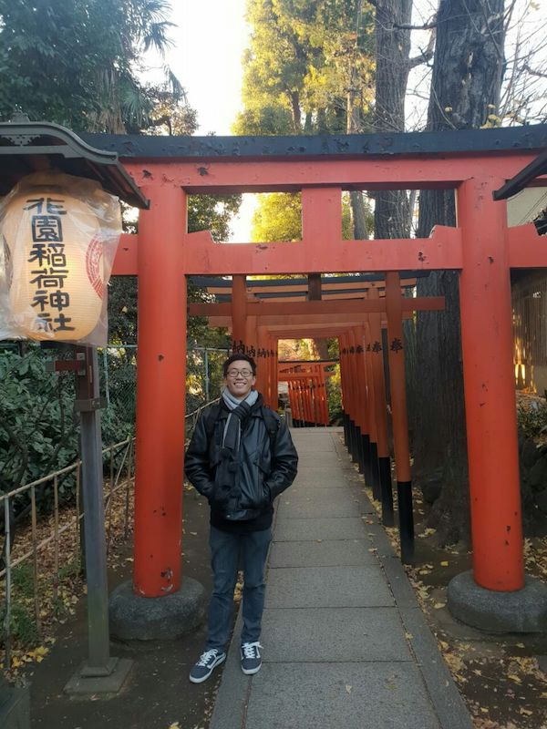

|  | LING Min KangPhD Student
Email: minkangling(AT)u.nus.edu |
Academic History
B.Sc. with Honours (Distinction) in Life Sciences (Specialisation: Environmental Biology), Second Major in Psychology (National University of Singapore, 2023)
Research Interests
I am interested in cnidarians (particularly jellyfishes!) As an undergraduate, I have previously investigated the hydromedusozoan diversity in the lagoons of Sentosa for my UROPS and worked on reconstructing several mitogenomes of several jellies found in Singapore for my honours thesis. Besides marine biology, I am also interested in both cognitive and abonormal psychology. In pursuit of these interests, I have previously worked on jellies and corals under Ms Iffah Iesa as a Student Researcher at the Lee Kong Chian Natural History Museum; additionally, I was also involved with experimental and cognitive psychology research under Dr Melvin J. Yap from the Department of Psychology as a Research Assistant.
Current Research Project
Jellyfish (Cnidaria: Medusozoa) provide important ecosystem and biodiversity services. However, while medusozoans are commonly found around Singapore’s waters, they remain relatively understudied, making prediction and management of human-jellyfish interactions challenging. My project aims to characterise the baseline diversity and seasonality of medusozoan jellyfish in Singapore based on field observations, DNA barcoding, historical records, and museum specimens collected from Singapore, establish a predictive model of jellyfish occurrences based on the ecological data collected, and develop a means to test for the presence of harmful jellyfish species in the field.
Previous Projects
Enhancing urban coral reef resilience to climate change across biological scales
Despite the stressors brought about by anthropogenic and shipping activities, corals in Singapore’s waters have shown remarkable resilience. In order to facilitate the restoration and management of corals in our local waters, we will incorporate key ecological, microbial and community connectivity data of corals in Singapore’s Southern Islands to identify sites for coral transplantation and management. Given the unique stressors present in Singapore’s urban reefs, such an approach may potentially serve as a model for managing other urban reefs globally in light of the challenges of climate change.